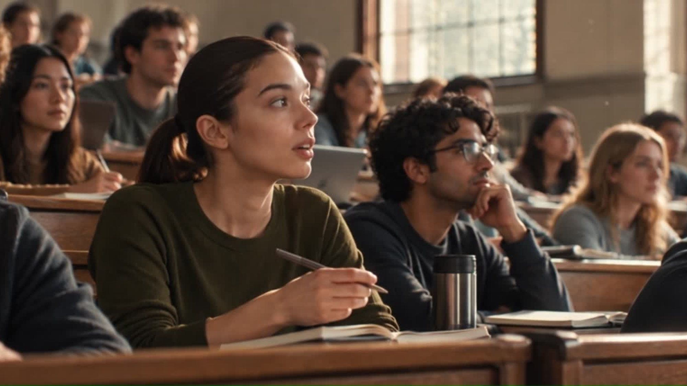
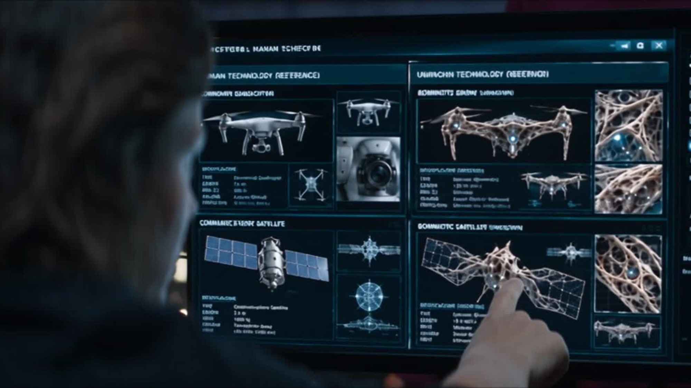
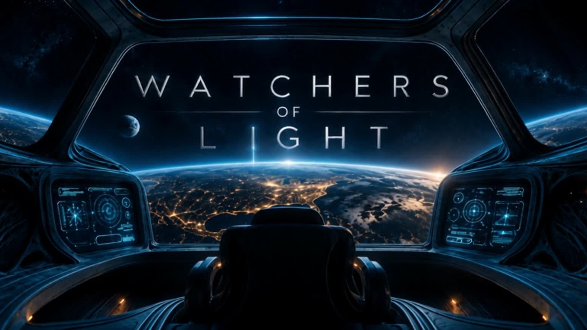

Work — 02 / Film
2026 · 01:04
Watchers
A short science-fiction film cut from eight shots — a station, a lecture hall, and a launch seen from the wrong side of the glass.
Brief An original short: a station, a classroom, and a launch nobody on the ground can stop.
At a glance
- Client
- Original
- Status
- Original
- Year
- 2026
- Runtime
- 01:04
- Format
- 16:9
- Role
- Direction, edit, sound, grade
01 — Brief
Eight shots, one argument
An original piece, made to test how far a small number of shots could carry a story. The premise is simple: something is leaving, and the people watching it have disagreed about whether it should.
No dialogue. The argument is carried by framing — who is inside the glass and who is outside it.
02 — Direction
Scope, because the room is wide
Shot in 2.35:1 so the cockpit reads as architecture rather than a dashboard. The camera sits where a passenger would sit: fixed, close to the instrument panel, looking out.
Every shot was boarded before rendering, including the two classroom frames that establish who is watching and what they already know.
The audience should feel the glass before they notice the room.
03 — Finish
Cold ship, warm window
The grade separates the two worlds: the station is blue and almost monochrome, the window is the only warm surface in the film. Sound is low and mechanical until the launch, then it drops out entirely for the last four seconds.



Credits — call sheet
- Client
- Original
- Direction
- Eluwade Tunmise
- Edit
- Eluwade Tunmise
- Sound
- Eluwade Tunmise
- Grade
- Studio LUT
- Runtime
- 01:04
- Format
- 2.35:1 scope
Next — 03 / 12

Food · 2026
Hermanos Tacos
Street food shot like product — and cut for a phone.